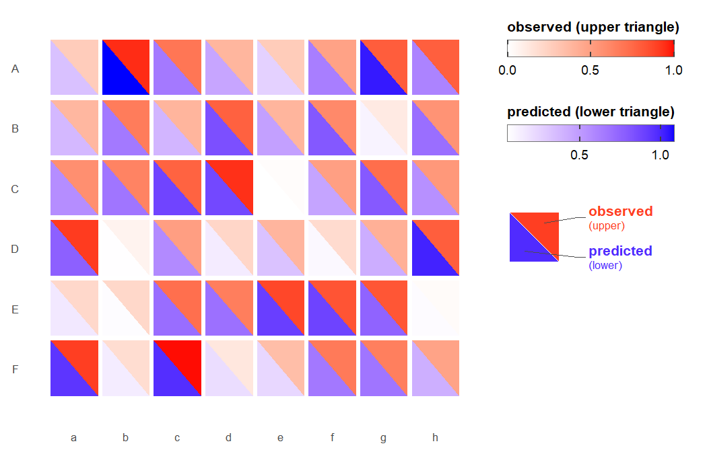

two matrices in one heatmap
BiHeat draws two numeric matrices of the same shape in one heatmap, such as observed and predicted values, a mean and its variance, or correlations and their p-values.
Each cell is split along a diagonal. The upper triangle shows the value from one matrix and the lower triangle the value from the other, each on its own colour gradient, and the plots are built with ggplot2. Both values for a row and column sit in the same cell, so you can see where the two matrices agree and where they differ, and decide which cells to look at more closely.
BiHeat supports:
- Separate or shared colour scales. Each triangle gets its own range when the matrices measure different things, or both share one range when their values are directly comparable.
-
Matrices with different row or column names.
breed()aligns the two on their shared names and reports the Pearson and Spearman correlation, RMSE, MAE and the number of missing cells. -
Split cells inside a ggplot.
geom_biheat()draws the same cells as a layer, so facets, coordinate systems and other layers work as usual, and thefillscale stays free for them. -
Legends for figure assembly.
bi_legend()returns the paired colour key as a standalone grob, for figures where the panel is assembled separately.
Other packages draw related displays. corrplot has corrplot.mixed(), which draws one display above the diagonal of a correlation matrix and another below it. ComplexHeatmap can split a cell through a custom cell_fun, alongside its clustering and annotation tools. BiHeat splits every cell of two plain matrices and gives each half its own gradient.
Installation
# install.packages("pak")
pak::pak("gcol33/BiHeat")Usage
- Draw the heatmap from two matrices with
biheat(). - For more control, pair the matrices with
breed(), set rendering options withincubate()and draw withplot(). - Pull the cell values back out as a data frame with
comes_out().
library(BiHeat)
set.seed(1)
species <- LETTERS[1:6]
sites <- letters[1:8]
observed <- matrix(runif(48), 6, 8, dimnames = list(species, sites))
noise <- matrix(rnorm(48, sd = 0.1), 6, 8)
predicted <- observed + noise
biheat(observed, predicted)
The first matrix fills the upper triangle (white to red) and the second the lower triangle (white to blue). Where the two disagree, the halves of a cell differ in shade.
The input is two numeric matrices. Where both carry row or column names, they are matched on the names they share; an axis without names on both sides is matched by position and needs the same length. Getting started with BiHeat describes how the matrices are aligned and how missing cells are drawn.
Pairing, styling and drawing in steps
biheat() is a shortcut for three steps. breed() pairs the two matrices into a clutch, an object holding both matrices aligned on their shared names together with their comparison statistics:
clutch <- breed(observed, predicted)
clutch
#> <clutch>
#> upper: observed (6 x 8)
#> lower: predicted (6 x 8)
#> align: intersect (6 rows x 8 cols kept)
#> cells: 48 finite / 48 total (0 NA)
#> pearson: 0.955 rmse: 0.0908 mae: 0.0693incubate() adds rendering options to a clutch, and each call adds to the options set before. plot() draws it:
The verbs take a clutch and return one, so they chain. switch_sides() swaps which matrix is on top, straighten() flips the direction of the diagonal and bothways() toggles between separate and shared colour scales:
clutch |>
switch_sides() |>
straighten() |>
bothways() |>
plot()Separate or shared colour scales
-
scale = "separate"(the default) gives the upper and lower triangles their own ranges. Use it when the two matrices measure different things, such as a correlation and its p-value or a mean and its variance. -
scale = "shared"puts both triangles on one range, so the colours of the two halves can be compared directly. Use it when the matrices are in the same units, such as observed and predicted values or the accuracy of two models.
Styling and layout covers palettes, printed values, cell geometry, skewed values and the order of rows and columns.
Split cells inside a ggplot
geom_biheat() draws the split cells as a ggplot2 layer from a data frame with one row per cell, which is the shape comes_out() returns:
library(ggplot2)
cells <- comes_out(clutch)
ggplot(cells, aes(col, row, upper = upper, lower = lower)) +
geom_biheat() +
theme_biheat()Each triangle carries its own gradient, so neither uses the fill scale, which stays free for another layer. Split cells inside a ggplot shows faceting, continuous axes and layers drawn on top.
Documentation
Start with Getting started with BiHeat: from two matrices to a split heatmap, how the matrices are aligned and what plot() returns.
- Styling and layout: palettes, printed values, cell geometry and row and column order.
-
Split cells inside a ggplot: the
geom_biheat()layer with facets, continuous axes and other layers. - Full reference: every function, grouped by job.
Getting help
Questions and bug reports go to the GitHub issues. A bug report is easiest to act on with a small reproducible example, for instance made with reprex.
Support
“Software is like sex: it’s better when it’s free.” — Linus Torvalds
I’m a PhD student who builds R packages in my free time because I believe good tools should be free and open. I started these projects for my own work and figured others might find them useful too.
If this package saved you some time, buying me a coffee is a nice way to say thanks. It helps with my coffee addiction.
Citation
Colling G (2026). _BiHeat: Diagonally Split Heatmaps for Paired Matrix
Visualization_. R package version 0.1.0,
<https://gillescolling.com/BiHeat/>.BibTeX: